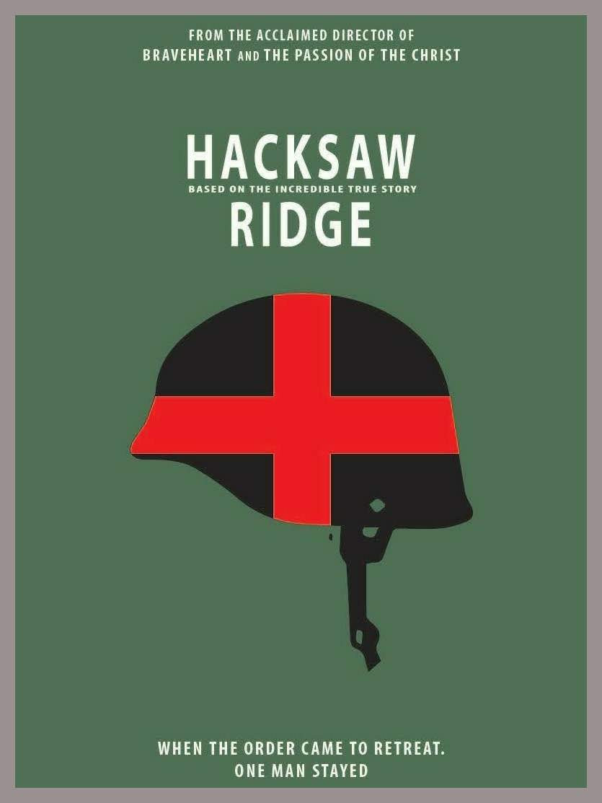
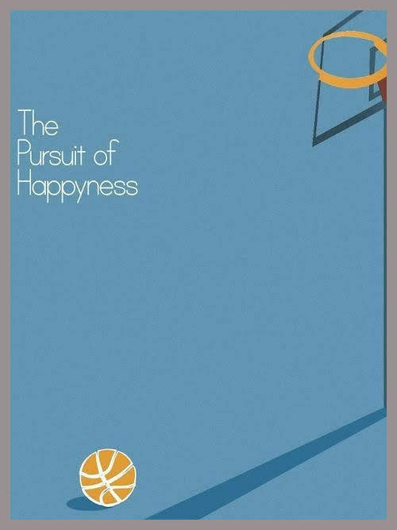

HACKSAW RIGDGE

In rural 1920s Virginia, the young Desmond Doss nearly kills his little brother Hal while roughhousing. This event and his Seventh-day Adventist upbringing reinforce Desmond's belief in the commandment "Thou shalt not kill". Years later, Doss takes an injured man to the hospital and meets a nurse, Dorothy Schutte. The two strike a romance and Doss tells Dorothy of his interest in medical work.
Doss is placed in basic training under the command of Sergeant Howell. He excels physically, but becomes an outcast among his fellow soldiers for refusing to handle a rifle and train on Saturdays. Howell and Captain Glover attempt to discharge Doss for psychiatric reasons under Section 8 but are overruled, as Doss' religious beliefs do not constitute mental illness. They subsequently torment Doss by putting him through grueling labor, intending to get Doss to leave of his own accord. Despite being beaten one night by his fellow soldiers, he refuses to identify his attackers and continues training.
Captain Glover tells Doss that they are scheduled to retake the ridge on Saturday and will not launch the next attack without him. Doss agrees but the operation is delayed until after he concludes his Sabbath prayers. With reinforcements, they turn the tide of battle. In an ambush set by Japanese soldiers feigning surrender, Doss manages to save Glover and others by deflecting enemy grenades. Doss is eventually wounded by a grenade blast, but the battle is won. Doss descends the cliff, clutching the Bible Dorothy gave him.
The film switches to archival photos and footage showing that Doss was awarded the Medal of Honor by President Harry S. Truman for rescuing 75 soldiers at Hacksaw Ridge. Doss stayed married to Dorothy until her death in 1991. He died on March 23, 2006, at the age of 87.
INTERVIEW
The Milford Daily News called the film a "masterpiece", adding that it "is going to end up on many 2016 Top 10 lists, that should get Oscar nominations for Best Actor, Best Director and Best Picture." Maggie Stancu of Movie Pilot wrote that "Gibson made some of his most genius directing choices in Hacksaw Ridge, and Garfield has given his best performance yet. With amazing performances by Vince Vaughn, Teresa Palmer, Sam Worthington and Hugo Weaving, it is absolutely one of 2016's must-see films."Mick LaSalle of SFGate called the film "a brilliant return for Mel Gibson, which confirms his position as a director with a singular talent for spectacle and a sure way with actors." In The Film Lawyers, Samar Khan called Hacksaw Ridge "fantastic," and emphasised "just how wonderful it is to have Gibson back in a more prominent position in Hollywood, hopefully with the demons of his past behind him. If Hacksaw Ridge is any indication, we are poised for a future filled with great films from the visionary director." The Daily Telegraph awarded four stars, and added: "Hacksaw Ridge is a fantastically moving and bruising war film that hits you like a raw topside of beef in the face – a kind of primary-coloured Guernica that flourishes on a big screen with a crowd."
THE PURSUIT OF HAPPYNESS

In 1981, San Francisco salesman Chris Gardner invests his entire life savings in portable bone density scanners, which he demonstrates to doctors and pitches as a handy quantum leap over standard X-rays. The scanners play a vital role in his life. While he is able to sell most of them, the time lag between the sales and his growing financial demands enrage his already bitter and alienated wife Linda, who works as a hotel maid. The financial instability increasingly erodes their marriage, in spite of them caring for Christopher Jr., their soon-to-be five-year-old son. Because Chris has trouble selling the scanners, as they only produce a slightly better picture than a common X-ray but for a much higher price, and hence does not have enough money to make ends meet, Linda has to work double shifts.
Disadvantaged by his limited work hours, and knowing that maximizing his client contacts and profits is the only way to earn the broker position, Gardner develops a number of ways to make phone sales calls more efficiently, including reaching out to potential high-value customers, defying protocol. One sympathetic prospect who is a top-level pension fund manager even takes Chris and Christopher to a San Francisco 49ers game. Regardless of his challenges, he never reveals his lowly circumstances to his colleagues, even going so far as to lend one of his bosses $5 for cab fare, a sum that he cannot afford. Concluding his six-month-internship, Gardner is called into a meeting with his managers. One of them notes he is wearing a new shirt. Gardner explains it is his last day and thought to dress for the occasion. The manager Martin Frohm smiles and says he should wear another new one tomorrow, letting him know that he has won the coveted full-time position and giving him back his $5 as he promised. Fighting back tears, Gardner shakes hands with them, then rushes to his son's daycare to embrace Christopher. They walk down the street, joking with each other (and are passed by the real Chris Gardner, in a business suit). The epilogue reveals that Gardner went on to form his own multimillion-dollar brokerage firm.
INTERVIEW
Manohla Dargis of The New York Times called the film "a fairy tale in realist drag ... the kind of entertainment that goes down smoothly until it gets stuck in your craw ... It's the same old bootstraps story, an American dream artfully told, skillfully sold. To that calculated end, the film making is seamless, unadorned, transparent, the better to serve Mr. Smith's warm expressiveness ... How you respond to this man's moving story may depend on whether you find Mr. Smith's and his son's performances so overwhelmingly winning that you buy the idea that poverty is a function of bad luck and bad choices, and success the result of heroic toil and dreams."